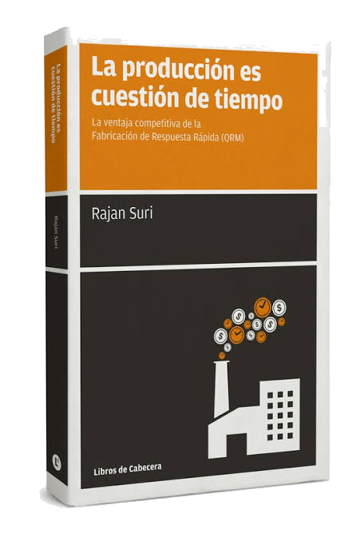

El programa QRM Silver Certificate te enseña a transformar tu organización tradicional en una empresa ágil enfocada en reducir los tiempos de entrega en todos sus procesos. Certificación oficial del QRM Institute.
Formación semipresencial · Incluye el libro «La producción es cuestión de tiempo» de Rajan Suri.
Pulsa cada pregunta para ver la respuesta.
El programa combina el conocimiento teórico de los principios QRM con aplicaciones prácticas a través de ejercicios y simulaciones. Ilustra la transformación de una organización centrada en los costos en una organización ágil de células QRM, enfocada en la reducción del tiempo de entrega.
El método QRM reduce los retrasos eliminando el tiempo innecesario visto por el cliente: el llamado espacio en blanco. Si te enfrentas a solicitudes cada vez más personalizadas con plazos cortos, QRM es el método más adecuado para ti.
Comprender la hoja de ruta de implementación de un proyecto QRM.
Asimilar el origen y los 4 principios fundacionales del QRM.
Adquirir técnicas para analizar el Manufacturing Critical-path Time (MCT).
Aprender e implementar las leyes de la dinámica de sistemas.
Entender la química de las interacciones entre personas y el liderazgo de respuesta rápida.
Convertirte en embajador de QRM para apoyar la transformación en todos los niveles.
Pulsa tu perfil para ver por qué el QRM encaja contigo.
Estrategias operativas y comportamiento de la demanda para valorar la idoneidad del QRM. El Manufacturing Critical-path Time (MCT) como herramienta básica para analizar la capacidad de reacción de los procesos.
Cómo se crean las células QRM de planta, las de oficinas (Q-ROCs) y los equipos autogestionados. Dinámica de sistemas: la relación entre sobrecapacidad y lead time, y las acciones que lo reducen.
Extender el enfoque a tiempo a ventas, compras, desarrollo de productos, ERP y costes. Pasos de una implementación QRM con la herramienta FTMS y la definición del Focused Target Market Segment.
La cultura empresarial que favorece la implicación: dominio, autogestión y finalidad. El cambio de rol de directivos y líderes, y un plan por fases para crear equipos y un liderazgo de apoyo con la herramienta Sharpa®.
Resolución de un caso real mediante el marco de análisis QRM y dinámicas para mapear los obstáculos a la implementación, entender su origen y elaborar estrategias para iniciar el cambio hacia QRM.
Todos nuestros programas se apoyan en una plataforma personalizada preparada para asegurar la mejor experiencia a cada alumno/a.


Especialista en la creación de organizaciones ágiles a través de metodologías QRM, Agile y Management 3.0.

Experto en estrategias Agile, QRM, Lean y Transformación Digital. Certified Scrum Master y Agile Coach.

Experto en Quick Response Manufacturing, metodologías ágiles y dirección de empresas. Focalizado en las personas y la estrategia.

30 años de experiencia en múltiples sectores. Experto en Lean Manufacturing y Quick Response Manufacturing.

«La producción es cuestión de tiempo», de Rajan Suri, creador de la metodología QRM.
Posibilidad de aprobar el examen final (opcional) y recibir la insignia y el certificado oficial del QRM Institute. Entrega del caso: 8 de enero de 2027.
Incluye la emisión del certificado QRM Silver Certificate® con dos convocatorias al examen.
Consulta descuentos, bonificaciones y ayudas.
Consultar ayudas y descuentos Bonificable parcialmente vía FUNDAEDéjanos tus datos y te contactaremos para resolver todas tus dudas sobre el programa, fechas, bonificaciones y proceso de inscripción.